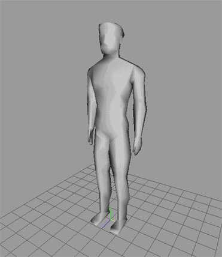
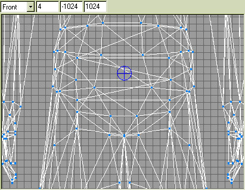
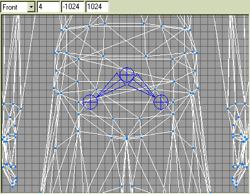
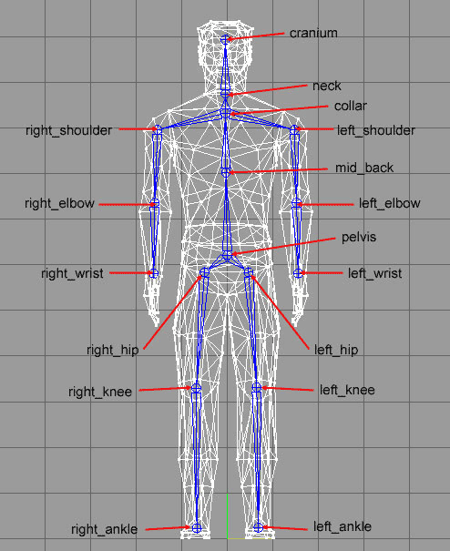

Part 1: Setting up the Skeleton
First of all we have to build the model, in this case I have pre-built
one so that we can go straight onto the subject of animation. This
is a custom animation, if you are creating an animation for a game
engine there may be certain procedures to follow, there may even be
a pre-created skeleton you can use with animations already present.
This tutorial only teaches the concept of 3D model animation. First;
we have to add joints to the model at areas where we want mesh deformation
to occur.

This is my model, I am assuming you already have a model that you want to
animate. We want to keep the animation simple so we will place bones at key
joints in the model, to resemble the most important joints of the human
skeleton when it comes to a walk cycle.
- Select the Joint tool from
the Model tab in the Toolbox.
- Make sure you are not
in animation mode. Go to the front wireframe view and place a joint
approximately in the centre of the pelvis where the spine would join.
The first placed joint is the root joint for the whole skeleton. As this
joint is in the centre of the model (roughly speaking) we will make it
the root joint.

- To create the left and right
extremities of the pelvis (we will call them left and right hip) you
have to select the middle pelvis joint before creating the left and
right hip joints. So first place the left joint, then select the middle
pelvis joint again and place the right joint to give you something that
looks like this.

- From here you should be able
to place all bones for the rest of the skeleton. Use the image below to
place the rest of the joints. Remember to have the 1st joint in the area
selected before you place the next, e.g. have left hip joint selected
before you place the left knee joint, the left knee joint selected
before you place the left ankle joint etc...

- This gives us our basic
skeleton, we still have to add to it. We still have to add the foot
joints and align all the joints so they resemble the human skeleton. So,
in the side view add a foot ball and toe joint to the foot (remember to
have the ankle joint selected before you place the foot ball joint,
etc).

- Now comes the boring bit, go
through all of the joints and name them as they are labeled in the
images above. First highlight the joint name (joint1, joint2 etc...) in
the joint selector box in the joints tab of the Toolbox then type the
appropriate name in the box beside the Rename button then click the
Rename button. Remember that while renaming the joints you are looking
at the model from the front, therefore your left and right sides are
reversed, so take special consideration when you rename the joints as
you want to name the joints from the perspective of being the model, so
to speak.
- Now that all the joints are
named we can re-position them so the skeleton represents a human
skeleton. Take consideration when re-positioning the joints, remember
that the joint is the centre point for deformation of your mesh in that
area. Try to model as accurately as possible the position of joints in
the human skeleton, it is only this way that you will get an animation that
looks like a human walking. The final set-up of my skeleton (viewed from
the side so you can see the position of joints) is shown in the
following image.

|
Note: You may wish to spend some
time fiddling with the positions of the joints so as to get the best
results. You will find the more experience you have the more you will
appreciate the exact positioning of joint so that model deforms in the best
possible way.
|
|